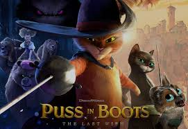
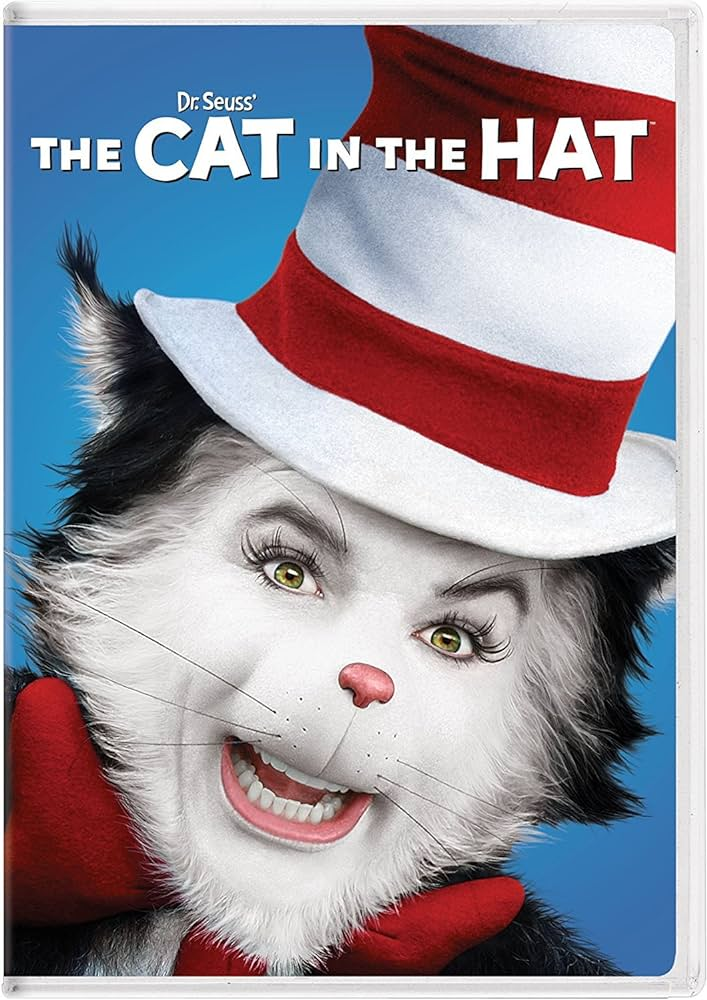
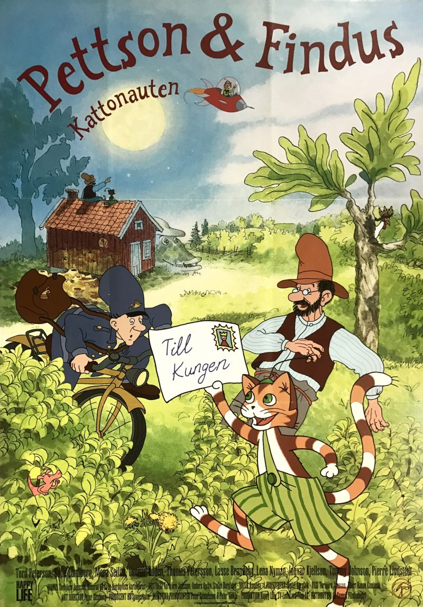
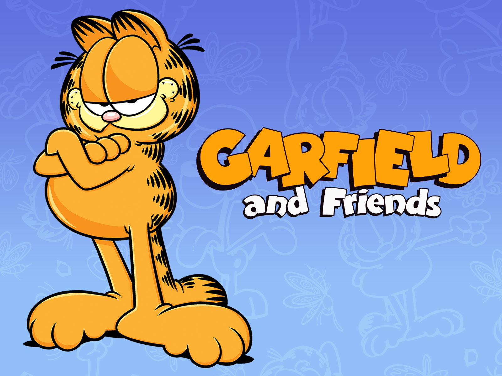
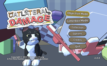
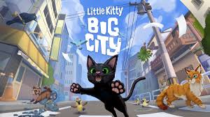
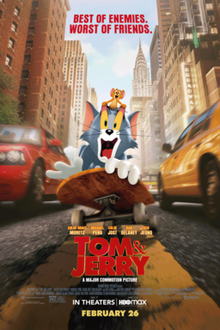
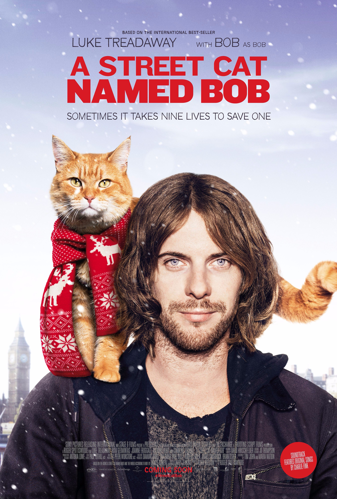

(note) this list isn't in a popularity sorting so bear with it
1. Stray. a popular cat game made in the year 2022
2. Puss in boots: the last wish: a very popular movie made in late 2022
3. Cat in the hat (live action). a popular piece of cat media made in the year 2003
4. Pettson and Findus. a popular piece animated movie from the year 2000
5. Garfield a popular piece of cat media that's been around since year 1976.
6. Cato: a buttered cat. a piece of media that was released on 6.9.2024 (nice)
7. Catlateral damage. a cat game made in the year 2014 where you play as a cat and your destiny is to destroy everything in your Path
8. Little kitty big city is a cat game made in 2024 where you play as a small cat in a big city (crazy i know)
9. Tom and Jerry. is an old cartoon of a cat and a mouse. the franchise started in 1992
10. A street cat named bob is a movie of a man and his cat where they are homeless and the cat is threatened to be taken away from the authorities
